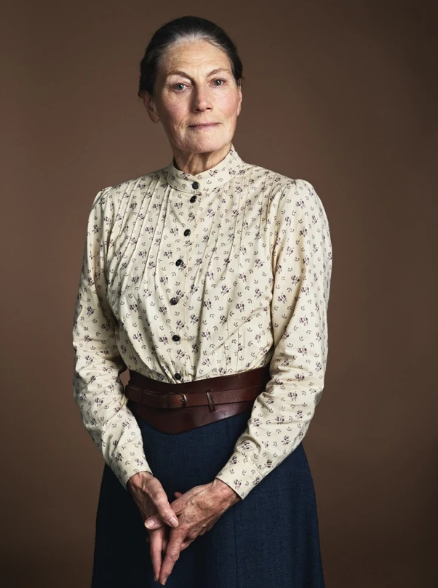

A self-restrained woman with no patience for sentiment or frivolity, Marilla’s dormant maternal nature and wry sense of humour are rekindled in relationship to Anne. She is played by Geraldine James.
Story
Marilla has lived with her brother, Matthew Cuthbert, ever since her other brother died. It was also confirmed that she had a relationship with John Blythe, but dumped him after he asked her to go with him on his travels around the world. 